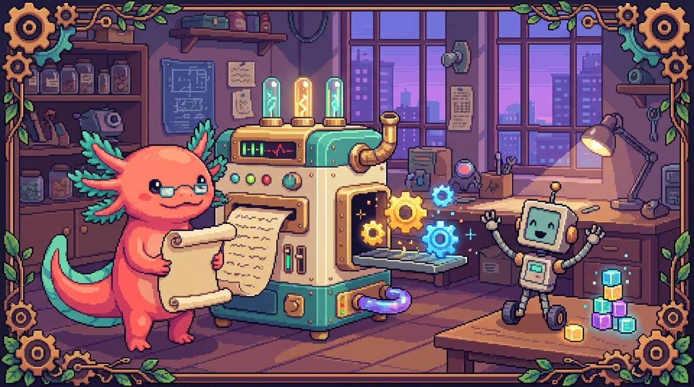

Capítulo 07 — Cómo se ejecuta el código

En este capítulo vas a seguir el viaje que hace tu código desde que lo escribes hasta que la computadora hace algo con él. Verás qué es el lenguaje de máquina, qué diferencia hay entre un compilador y un intérprete, y por qué algunos lenguajes (como JavaScript o Python) parecen "correr solos" mientras otros (como TypeScript) necesitan un paso extra antes de funcionar. Bit, nuestro ajolote pixelado, te acompaña: piénsalo como asomarte a la cocina mientras tú solo pediste el plato. Entender esto te va a ahorrar muchísimos dolores de cabeza cuando algo falle en tus proyectos.
1. El problema de fondo: tú y la máquina hablan idiomas distintos
Cuando escribes una línea como let nombre = "Bit", tú la entiendes sin pensarlo. La computadora, en cambio, no entiende ni una letra de eso. En el fondo, lo único que sabe hacer una computadora es trabajar con electricidad encendida o apagada: unos y ceros. Nada más.
O sea que entre tú y la máquina hay un abismo enorme. Tú escribes algo parecido al inglés (palabras como let, if, return); ella solo entiende números crudos. Alguien tiene que traducir en medio. De eso trata este capítulo entero: de quién hace esa traducción y en qué momento.
🟦 ¿Qué significa? — Código fuente
Es el texto que tú escribes en un lenguaje de programación, tal como sale de tus dedos en el editor. Sirve para que tú, un humano, puedas expresar lo que quieres que pase con palabras legibles. Todavía no es algo que la máquina ejecute directamente: es la "receta escrita", no el "plato cocinado". ¿Dónde se usa en tu proyecto? El archivo
sitio-web/main.jsde tunal-digital es código fuente: texto que tú escribiste y que aún tiene que traducirse antes de que el navegador lo ejecute.
2. El lenguaje de máquina: el único idioma que la computadora entiende de verdad
En el corazón de tu computadora hay una pieza llamada procesador (o CPU). Es el cerebro que hace las cuentas. Pero es un cerebro sorprendentemente simple: solo sabe seguir órdenes muy pequeñas y muy concretas, escritas como números. "Suma estos dos valores". "Guarda este número aquí". "Compara estos dos". Y poco más que eso.
🟦 ¿Qué significa? — Procesador (CPU)
Es el chip físico que ejecuta de verdad las instrucciones de tu computadora. Las siglas CPU vienen del inglés Central Processing Unit (unidad central de procesamiento). Su trabajo es hacer, una tras otra y a una velocidad altísima, las operaciones diminutas que componen cualquier programa. Importa porque solo entiende lenguaje de máquina: todo lo que escribas, sea JavaScript, Python o TypeScript, tiene que terminar convertido en algo que este chip pueda seguir.
🟦 ¿Qué significa? — Lenguaje de máquina
Es el conjunto de instrucciones, escritas en números binarios (unos y ceros), que el procesador entiende y ejecuta directamente, sin ninguna traducción de por medio. Es el "idioma final": absolutamente todo lo que escribes termina convertido en esto. Hoy nadie programa directamente en lenguaje de máquina, porque sería como escribir una novela usando solo el código de luces de un faro.
Una sola instrucción de lenguaje de máquina podría verse así:
10110000 01100001
Para cierto procesador, eso podría significar "mete el número 97 en un lugarcito de memoria". Ahora imagina escribir toda una aplicación así, instrucción por instrucción. Para un humano es impensable. Justo por eso inventamos los lenguajes de programación: para escribir con palabras y dejar que un programa traduzca esas palabras a esos unos y ceros.
💡 Tip — La pregunta clave de este capítulo
Cada vez que aprendas un lenguaje nuevo, hazte una sola pregunta: "¿Cómo llega esto al lenguaje de máquina?" La respuesta siempre es una de dos: alguien lo compila (lo traduce todo de golpe antes de usarlo) o alguien lo interpreta (lo va traduciendo línea por línea mientras lo usa). Con eso solo ya entiendes el 90% del tema.
3. Dos caminos para traducir: compilar e interpretar
Para cruzar ese abismo entre tu código fuente y el lenguaje de máquina hay dos grandes estrategias. Antes de las definiciones formales, vamos con una analogía.
Imagina que escribiste un libro en español y quieres que lo lea alguien que solo habla japonés.
- Opción A (compilar): contratas a un traductor que toma tu libro entero, lo traduce completo al japonés y te entrega un libro nuevo en ese idioma. De ahí en adelante, el lector japonés lee directamente ese libro traducido, sin que el traductor siga presente. La traducción se hizo una vez, antes, y el resultado es un archivo nuevo.
- Opción B (interpretar): sientas a un traductor al lado del lector japonés. Tú lees una frase en español, el traductor la dice en japonés en voz alta, el lector reacciona y pasas a la siguiente frase. La traducción ocurre en vivo, mientras se usa, frase por frase, y no queda ningún libro nuevo guardado.
Las dos funcionan. Cada una tiene sus ventajas. Veamos los términos.
🟦 ¿Qué significa? — Compilar
Es traducir todo el código fuente de golpe, antes de ejecutarlo, produciendo un archivo nuevo (en lenguaje de máquina o en otro lenguaje más cercano a la máquina). La ventaja es que, una vez traducido, el programa corre rápido y ya no necesita al traductor presente. El programa que hace esa traducción se llama compilador.
🟦 ¿Qué significa? — Interpretar
Es traducir y ejecutar el código fuente línea por línea, en el momento, sin producir un archivo final separado. La ventaja es que arrancas rápido y pruebas cambios al instante: editas, vuelves a correr y listo, sin esperar una traducción completa. El programa que hace esto se llama intérprete.
🟦 ¿Qué significa? — Compilador
Es el programa traductor que toma tu código fuente completo y produce una versión traducida. Hace todo el trabajo pesado de traducción una sola vez. Piensa en el traductor de la Opción A, que te entrega el libro entero ya en japonés.
🟦 ¿Qué significa? — Intérprete
Es el programa traductor que va leyendo tu código y ejecutándolo sobre la marcha, sin guardar un resultado traducido. Te da flexibilidad y rapidez mientras desarrollas. Es el traductor de la Opción B, sentado al lado, traduciendo en vivo.
💡 Tip — Compilado vs. interpretado no es blanco o negro
En la práctica moderna, casi nada es 100% puro. Muchos lenguajes mezclan las dos ideas (ahora verás el "código de bytes"). No te obsesiones con meter cada lenguaje en una casilla exacta: lo que de verdad importa es entender qué pasos hay que dar para que tu código corra en cada proyecto.
4. El término intermedio: código de bytes
Hay una idea muy ingeniosa que vive justo entre los dos mundos, y la usan muchísimos lenguajes populares (Python entre ellos). Se llama código de bytes.
La idea es esta: traducir el código a un lenguaje intermedio que no es tan amigable como tu código fuente, pero tampoco es el lenguaje de máquina final del procesador. Es un punto medio, pensado para que una pequeña máquina virtual lo ejecute rápido.
🟦 ¿Qué significa? — Código de bytes (bytecode)
Es un formato intermedio entre tu código fuente y el lenguaje de máquina: un conjunto de instrucciones compactas y simplificadas que no corren directamente en el procesador, sino sobre un programa especial llamado máquina virtual. Combina lo mejor de los dos mundos: se prepara una vez (como compilar) pero sigue siendo fácil de mover entre computadoras distintas (como interpretar).
🟦 ¿Qué significa? — Máquina virtual (de un lenguaje)
Es un programa que sabe ejecutar código de bytes. Funciona como "intérprete del código de bytes": recibe esas instrucciones intermedias y las convierte, en el momento, en acciones reales sobre tu computadora. Gracias a ella, un mismo código de bytes funciona en Windows, Mac o Linux sin cambiarlo, porque cada sistema tiene su propia máquina virtual.
Para que no suene tan abstracto: cuando ejecutas PolyPaw, tu archivo main.py no se convierte directamente en unos y ceros del procesador. Python primero lo convierte en código de bytes (un formato intermedio que a veces verás guardado en archivos .pyc dentro de una carpeta llamada __pycache__) y luego una máquina virtual de Python ejecuta ese código de bytes. Todo esto pasa tan rápido que parece instantáneo, pero ahí está, ocurriendo.
🔎 En tu código
Cuando corres
python main.pypara arrancar PolyPaw, el intérprete de Python lee tu archivo, lo traduce a código de bytes y lo ejecuta. Si abres la carpeta del proyecto después de correrlo, puede aparecer una carpeta__pycache__con archivos.pyc: ese es el código de bytes que Python guardó para no tener que traducir tu código otra vez la próxima. No lo borres a mano ni te asustes: es de lo más normal, y suele ir ignorado en Git.
5. JavaScript: se interpreta dentro del navegador
Vamos con el lenguaje estrella de la web. JavaScript es el que hace que las páginas reaccionen: que un botón haga algo, que aparezca un mensaje, que se cargue contenido sin recargar la página.
¿Y quién traduce JavaScript? El navegador (Chrome, Firefox, Safari…). Dentro de cada navegador vive un programa llamado motor de JavaScript que lee tu código JS y lo ejecuta. En el fondo es un intérprete: muy avanzado, pero intérprete al fin y al cabo.
🟦 ¿Qué significa? — Motor de JavaScript
Es el programa, incluido dentro de cada navegador, que lee y ejecuta el código JavaScript de una página web. Es el que le da vida a la página: sin él, tu archivo
main.jssería solo texto inerte. El motor de Chrome se llama V8 y tiene fama de ser muy rápido.🔎 En tu código
En tunal-digital, tu archivo
sitio-web/main.jsse envía al navegador del visitante junto conindex.htmlystyles.css. El navegador del visitante es quien interpreta y ejecuta ese JavaScript en su propia computadora. Tú no compilas nada: subes el texto tal cual y cada navegador lo ejecuta. Por eso, si escribes un error enmain.js, no te enteras al "construir" el sitio (no hay paso de construcción): te enteras solo cuando el navegador llega a esa línea y falla.💡 Tip — La consola del navegador es tu mejor amiga
Como JavaScript se interpreta en el navegador, los errores aparecen ahí. Presiona F12 (o clic derecho → "Inspeccionar") y abre la pestaña Console. Cuando algo de
main.jsno funcione en tunal-digital, ese panel rojo te dirá en qué línea murió todo. Bit lo mira siempre antes de tocar nada.
Hay un detalle curioso: JavaScript también corre fuera del navegador, en los servidores. De eso se encarga un programa llamado Node.js, que es básicamente el motor V8 de Chrome empaquetado para funcionar por su cuenta. Lo vemos enseguida, porque tus proyectos lo usan.
🟦 ¿Qué significa? — Node.js
Es un programa que toma el motor de JavaScript de Chrome (V8) y lo saca del navegador, para que puedas ejecutar JavaScript en cualquier parte: en tu computadora, en un servidor, en la terminal. Así, el mismo lenguaje que usas en la web también te sirve para programas de backend o herramientas. ¿Dónde se usa en tu proyecto? Cuando corres
npm run builden Faro o RachaSimple, quien ejecuta esas herramientas por debajo es Node.js. Y elsrc/app/apide Faro corre dentro de Node.js, no en el navegador.🔎 En tu código
El backend de tunal-digital vive en
backend/worker.jsy corre en Cloudflare Workers, un servicio que ejecuta JavaScript en servidores repartidos por el mundo (sin navegador). Es el mismo idioma, JavaScript, pero interpretado en otro lugar: en vez de en la computadora del visitante, en la infraestructura de Cloudflare. Ese worker es el que habla con la API de Claude sin exponer tus claves al cliente.
6. Python: se interpreta (con su paso de código de bytes)
Python es el lenguaje de PolyPaw. Tiene fama de ser legible y amable con quien empieza. Python es un lenguaje interpretado: no produces un archivo .exe traducido que repartes; en su lugar, instalas Python en la máquina y le pides que ejecute tus archivos .py directamente.
Como vimos en la sección 4, ese "interpretado" de Python esconde un pasito intermedio: tu código se convierte a código de bytes y luego una máquina virtual lo ejecuta. Pero desde tu silla, como programador, tú solo escribes main.py y corres python main.py. El resto queda invisible.
🔎 En tu código
PolyPaw usa el framework Flet para construir la interfaz, y guarda sus datos en archivos JSON (
polypaw_db.json,missions/*.json). Cuando arrancas la app, el intérprete de Python leemain.py, lo traduce a código de bytes y la máquina virtual de Python lo ejecuta dibujando la ventana de Flet. Los archivos.jsonson datos, no código: Python los lee como texto y los convierte en información que tu programa usa. A un JSON nadie lo "interpreta" ni lo "compila"; solo se lee.🟦 ¿Qué significa? — Framework
Es un conjunto de código ya hecho por otras personas que te da una estructura y herramientas listas para construir cierto tipo de programa, para que no empieces desde cero. Te ahorra una cantidad enorme de trabajo. ¿Dónde se usa en tu proyecto? Flet es el framework que le da a PolyPaw sus botones y pantallas sin que tú tengas que dibujar píxel por píxel.
⚠️ Cuidado — "Interpretado" no significa "lento siempre"
Mucha gente cree que los lenguajes interpretados son lentos y los compilados rápidos. Es una verdad a medias, y además anticuada. Los motores modernos (como V8 de JavaScript) usan trucos para acelerar muchísimo, y Python le sobra para PolyPaw. En tus proyectos, la velocidad del lenguaje casi nunca va a ser el problema; lo serán otras cosas (la red, la base de datos, tu propia lógica). No elijas lenguaje por miedo a la velocidad.
7. TypeScript: se compila a JavaScript
Ahora un caso precioso que junta todo lo anterior. TypeScript es el lenguaje de RachaSimple y de Faro. Y aquí pasa algo distinto.
El navegador no entiende TypeScript. Para la web solo hay un lenguaje que el navegador entienda: JavaScript. Entonces, ¿cómo funciona TypeScript? La clave es sencilla: TypeScript se compila a JavaScript. O sea, hay un paso de traducción que toma tus archivos .ts (o .tsx) y produce archivos .js equivalentes, que ya sí pueden ejecutar el navegador o Node.js.
🟦 ¿Qué significa? — TypeScript
Es, básicamente, JavaScript con una capa extra: te deja escribir tipos (declarar que una variable es un texto, un número, una fecha…) para que los errores se detecten antes de ejecutar. Eso te da un código más seguro en proyectos grandes. Como ningún navegador lo entiende directamente, siempre se compila a JavaScript antes de usarse.
🟦 ¿Qué significa? — Compilar TypeScript (transpilar)
Es el paso que convierte tus archivos
.ts/.tsxen archivos.js. A esta traducción de "un lenguaje de alto nivel a otro lenguaje de alto nivel" a veces se le llama transpilar (en vez de compilar a lenguaje de máquina, traduce a otro lenguaje legible). El resultado es que tu código TypeScript se vuelve JavaScript ejecutable. Ese JavaScript es lo que de verdad corre.🟦 ¿Qué significa? — Vite
Es una herramienta de construcción: un programa que prepara tu proyecto para que el navegador lo pueda usar. Toma tus archivos TypeScript, los compila a JavaScript, junta todo y, mientras desarrollas, recarga la página al instante cuando guardas un cambio. Te quita de encima ese trabajo de traducción y empaquetado a mano. ¿Dónde se usa en tu proyecto? RachaSimple usa Vite para convertir su TypeScript en JavaScript que el navegador entiende.
🔎 En tu código
RachaSimple está hecho en React 18 + TypeScript + Vite. Tus archivos en
src/components,src/hooksysrc/types/database.tsson TypeScript. Cuando ejecutas el proyecto, Vite (la herramienta de construcción) compila ese TypeScript a JavaScript y lo entrega al navegador. El archivosrc/types/database.ts, por ejemplo, define los tipos de tus datos de Supabase: describe qué forma tiene cada fila de la base de datos. Eso ayuda al compilador a avisarte si te equivocas de campo antes de que el usuario vea un error.🔎 En tu código
Faro (la carpeta Organizer) usa Next.js 15 + React 19 + TypeScript. Tu carpeta
src/app/apicontiene código que corre en el servidor (con Node.js, no en el navegador), ysrc/libcontiene utilidades. Todo ese TypeScript se compila a JavaScript antes de ejecutarse. Por eso, en las reglas del proyecto Faro, se exige quenpm run buildpase antes de fusionar: ese comando compila todo el TypeScript y, si hay un tipo mal escrito, falla la construcción y no llega código roto a producción.💡 Tip — El compilador como red de seguridad
La gran ventaja de compilar TypeScript es que el compilador revisa tu código antes de que nadie lo use. Si en RachaSimple escribes
usuario.nombren vez deusuario.nombre, el compilador te frena con un error claro. En JavaScript puro (como tunal-digital), ese mismo error pasaría desapercibido hasta que un usuario real lo encuentre roto. Por eso los proyectos grandes prefieren TypeScript: el paso extra de compilar les ahorra sustos.
8. Juntando todo: el viaje de cada proyecto tuyo
Veamos de un vistazo cómo viaja el código en cada uno de tus proyectos, desde tus dedos hasta la ejecución real.
tunal-digital (main.js, JavaScript "vanilla")
Tu .js ──(se envía tal cual)──> Navegador del visitante ──interpreta──> se ejecuta
tunal-digital (backend/worker.js)
Tu .js ──> Cloudflare Workers ──interpreta JS en el servidor──> responde
PolyPaw (main.py, Python)
Tu .py ──interprete de Python──> código de bytes ──máquina virtual──> se ejecuta
RachaSimple (.tsx, TypeScript)
Tu .ts/.tsx ──Vite COMPILA──> .js ──> Navegador interpreta──> se ejecuta
Faro (.ts, TypeScript + Next.js)
Tu .ts ──npm run build COMPILA──> .js ──> Node.js / Navegador ejecuta
¿Ves el patrón? JavaScript y Python se interpretan (alguien los traduce en vivo al ejecutarlos). TypeScript se compila a JavaScript primero, y luego ese JavaScript se interpreta. Es como una traducción en dos escalas: español → japonés → acción.
⚠️ Cuidado — Un mismo lenguaje, distintos lugares de ejecución
Fíjate que JavaScript aparece dos veces en tunal-digital: en el navegador del visitante (
main.js) y en el servidor de Cloudflare (worker.js). Es el mismo idioma, pero dónde corre lo cambia todo. Elmain.jslo ejecuta la computadora de cada visitante (ahí no puedes esconder ningún secreto). Elworker.jslo ejecuta Cloudflare, en un lugar privado (ahí sí van tus claves de la API de Claude). Esta distinción "cliente vs. servidor" se conecta directo con la seguridad: por eso las reglas de Faro insisten en que los secretos vivan solo en el servidor.
9. Por qué todo esto te importa de verdad
No es teoría de adorno. Entender cómo se ejecuta tu código te ahorra horas de frustración:
- Sabrás dónde buscar errores. En tunal-digital, los errores de
main.jssalen en la consola del navegador (F12). En Faro o RachaSimple, muchos errores aparecen antes, al compilar, en la terminal donde corresnpm run buildo el servidor de desarrollo. - Entenderás los pasos de "construcción". Cuando un proyecto te pide correr
npm run buildantes de publicar, ahora sabes que eso compila tu TypeScript y lo revisa todo. No es un ritual mágico: es la traducción ocurriendo. - Tomarás mejores decisiones de seguridad. Como sabes que el JavaScript del cliente lo ve cualquiera, nunca pondrás una clave secreta en
main.js. La pondrás en el servidor (worker.js, o las variables de entorno de Faro), porque ahí el código se ejecuta lejos de ojos curiosos. - No te asustarán los archivos "raros". Las carpetas
__pycache__de Python, o las carpetas con el JavaScript ya compilado de tus proyectos TypeScript, dejarán de ser un misterio.
💡 Tip — Una regla mental simple
Antes de tocar un proyecto, pregúntate: "¿Este código se compila o se interpreta? ¿Y dónde se ejecuta: en el navegador del usuario, en mi computadora o en un servidor?" Esas dos respuestas te dicen dónde buscar errores y dónde es seguro guardar secretos. Bit se las hace siempre antes de empezar.
✅ Checklist — ¿ya domino esto?
- [ ] Puedo explicar por qué la computadora no entiende mi código fuente directamente.
- [ ] Sé qué es el lenguaje de máquina y por qué nadie programa en él hoy.
- [ ] Distingo entre compilar (traducir todo antes) e interpretar (traducir en vivo, línea por línea).
- [ ] Entiendo qué es un compilador, un intérprete y qué hace cada uno.
- [ ] Sé qué es el código de bytes y por qué Python lo usa.
- [ ] Puedo decir quién ejecuta el JavaScript de tunal-digital (el navegador) y quién el de su backend (Cloudflare Workers).
- [ ] Entiendo que TypeScript se compila a JavaScript y que por eso RachaSimple y Faro tienen un paso de construcción.
- [ ] Sé por qué los secretos van en el servidor y no en el JavaScript del cliente.
🧪 Ejercicios
-
Sin computadora. Con tus propias palabras, explica la diferencia entre compilar e interpretar usando la analogía del libro traducido. Inventa otra analogía propia (por ejemplo, con una receta de cocina) y escríbela en tres o cuatro líneas.
-
Sin computadora. Para cada uno de tus cinco proyectos, escribe en una tabla: el lenguaje principal, si se compila o se interpreta, y dónde se ejecuta (navegador del usuario, tu computadora, o un servidor). Pista: tunal-digital aparece dos veces (cliente y servidor).
-
💻 Con computadora. Abre tunal-digital en un navegador, presiona F12 y ve a la pestaña Console. En tu
main.js, agrega temporalmente una línea con un error a propósito, por ejemploconsole.log(variableQueNoExiste). Recarga la página y observa el mensaje de error rojo. Anota en qué línea dice que ocurrió. Luego borra esa línea. -
💻 Con computadora. En la carpeta de PolyPaw, corre
python main.pyy, cuando termine, busca si apareció una carpeta llamada__pycache__. Abre esa carpeta y observa los archivos.pyc: ese es el código de bytes del que hablamos. No los edites; solo confirma que existen. -
💻 Con computadora. En Faro (carpeta Organizer) o RachaSimple, corre el comando de construcción (
npm run build). Observa cuánto tarda y qué mensajes aparecen. Si todo está bien, dirá que la construcción fue exitosa. Esto es el compilador de TypeScript haciendo su trabajo: traduciendo y revisando tu código. -
💻 Con computadora (reto). En RachaSimple, abre
src/types/database.tsy mira cómo se declaran los tipos de los datos. Sin romper nada, identifica un campo (por ejemplo, el nombre de una columna) y razona en voz alta: "si yo escribiera mal este nombre en otra parte del código, el compilador me avisaría al hacer build". No hace falta que rompas nada: solo observa cómo el tipo describe la forma de tus datos.